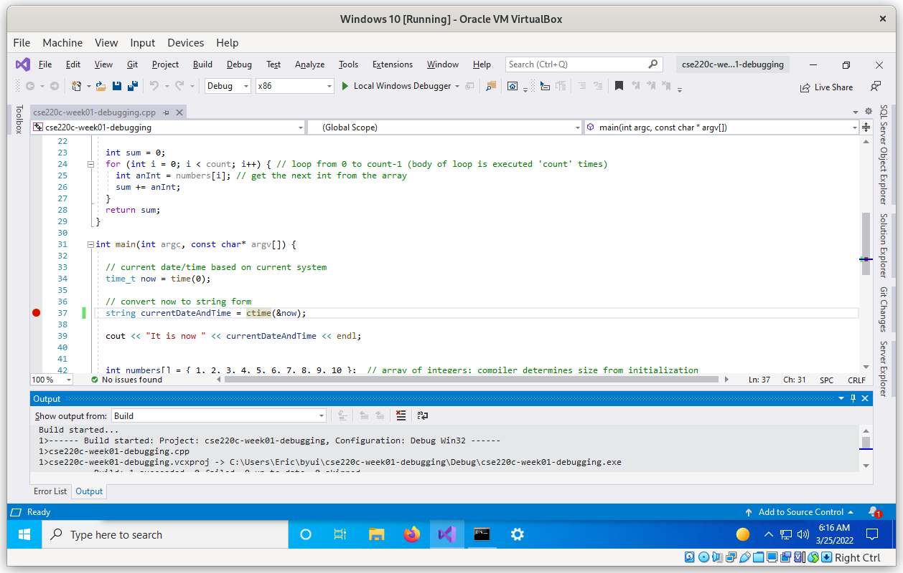
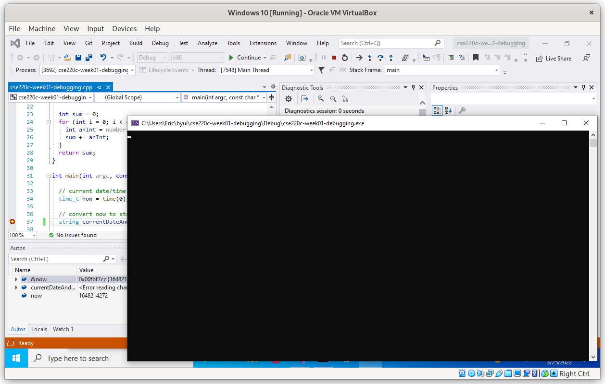

Debugging Your Code
Each of your IDEs, Visual Studio, Xcode, or Eclipse have tools built into them to make the creation and debugging of your code easier. Your task is to experience and understand not only how the stepwise debugger for your IDE works, but to see how it can help you when you have a logic error in your code. In other words, when your code isn't doing what you think it should, you use the stepwise debugger to find out what it is actually doing so you can track down the flaw in your thinking and code. Once you've found the flaw, you can brainstorm about how to change your code so it works as you intended.
There will be many actions you will take described for you based on which IDE you use. Read and follow all the descriptions. First, download stepwise_debugging_v2.cpp. You'll use it to help you learn how to use the stepwise debugger.
(Mac users skip to the next section for Xcode instructions)
(Eclipse users skip to the section for Eclipse instructions)
Note: Windows users should install Visual Studio Community, NOT Visual Studio Code. These are two vastly different products. Visual Studio Code is a nice text editor with great extensions, but it is not the right tool for professional C++ development. Visual Studio Community is a full-featured IDE (Integrated Development Environment), including a modern C++ compiler and debugger. Both of these products from Microsoft are free. For this class, make sure you are using Visual Studio Community.
Run Visual Studio and create a new Console App project called learning_debugging. Select the learning_debugging.cpp file in your project and delete all the code there. Copy and paste the contents of the file you downloaded earlier into the learning_debugging.cpp file in Visual Studio, then type Ctrl+S to save it. Don't try to fully understand all the code in the file for now; it will all be explained later. For the time being, just focus on completing and understanding the following:
Start by clicking the gray area just to the left of the number 37 on the left side of the Visual Studio window and you should see a red dot appear. This red dot indicates that a breakpoint has just been set in the code. Breakpoints are how you temporarily pause the code's execution so you can see what is actually going on in the code rather than what you think might be going on. You are now ready to use Visual Studio's built-in stepwise debugger. 
Click the green triangle button labeled "Local Windows Debugger" near the top center of the Visual Studio window. This will compile your code and begin running it in debugger mode. You'll notice a black window pop open. This is where the output from the program will eventually appear, so leave this window open (even though it is blank right now). 
After the compilation process completes, the application will run up to the breakpoint on line 37 and pause.
You should see that the red dot breakpoint indicator you set earlier on line 37 now has a yellow arrow in it to indicate that the program is currently executing, but has paused on line 37, which has not yet executed. Let's make it execute. On the top center area of the Visual Studio window, look for a black dot with a bent arrow over it. When you hover the mouse over it (without clicking), a help message pops up, letting you know this is the step over button. Each time you click this button, the highlighted line of code executes. Let's try it. Click the step over button.
The first thing you'll notice is the current line indicator arrow has moved down to the next line of code. Visual Studio has paused again and is waiting to execute that line. Next, hover your mouse over "currentDateAndTime" on line 37 in the code. You'll see a pop-up message with the value of this variable displayed. If you look in the pane at the bottom left of the Visual Studio window, you'll also see this same variable with its value. You can use either of these methods to keep track of the values of any variable you create in your code.
Select the step over button again. Line 39 has now executed. In the black window that popped open earlier, you should see "It is now" followed by the current date and time. This is the Visual Studio console. We use cout in C++ to display output in the console, similar to using print in Python. We typically use cout to print out debug messages. Whether you use a debug statement like this or the stepwise debugger is situationally dependent. Your instructor and your own experience will help you decide when it is best to use which option.
Select the step over button once more so that the debugger is paused on line 43. This line is different. While you will learn much more about this later, what you see in line 43 is a call to a C++ function that returns a value. That value is stored in the 'theTotal' variable. For this next step, please make sure you read carefully. If you were to click the step over button again (please don't actually do it), you would then see the sum of the numbers 1 through 10 in the theTotal variable, but we are going to do something much more interesting.
Next to the step over button, there is another button. This one is a black dot with an arrow pointing down to it. If you move your mouse over it, a help message pops up letting you know that this is the 'step into' button. Go ahead Move your mouse over it and a help message pops up letting you know that this is the 'step into' button. Go ahead and click it.
You'll see that the highlighted line of code jumped to line 21. That's because you stepped into--instead of over--the total C++ function. To continue, click the step over button. You can watch the value of each number in theNumbers get added to the sum.
Eventually, the numbers will all have been added to the sum and the debugger will be on line 28. Move your mouse over sum or find it in the bottom-left-hand pane and you will find that the total is 55. It is important to realize you know this BEFORE the function returns the value.
Select step over again, and the highlighted code moves back to line 43. Select step over one more time and the result of the calculation, 55, is stored in the theTotal variable. With your next click, cout prints out the next debug statement including the value 55, in the console window.
Run Xcode and create a new project called learning_debugging following the same process you did in the reading. Double-click the file you downloaded earlier. Copy the contents of the file. Then select the main.cpp file in your project and remove the code you find there and paste in the code you just copied. There is code in this file that will look strange to you. Don't try to fully understand it right now. Each of the things you see will be explained later. For now, just focus on completing and understanding the following actions.
Start by clicking on the number 37 on the left of the center pane of the Xcode window. This area is called 'the gutter' and shows you the line numbers for your code. You will see a blue indicator show up in the gutter. This indicator is showing you where a 'break point' has just been set in the code. Breakpoints are how you temporarily pause the code's execution so you can see what is actually going on in the code rather than what you think might be going on. You are now ready to use Xcode's built-in stepwise debugger and should see this. Now click the triangular run button in the upper-left-hand of the window. This will start the compilation process and run your code for you.
After the compilation process completes, the application will run up to the breakpoint on line 37.
What you now see is a bounded green selection including all the code for line 37. At this point in time, line 37 has not executed. Let's make it execute. On the left-hand side of the top part of the bottom pane that just showed up, you will see a bar with a bent arrow over it. It looks kind of like a squinty eye with a weird eyebrow. When you move your mouse over it, without clicking, a help message pops up letting you know this is the step over button. Each time you click this button, the highlighted line of code executes. Let's give it a go. Select the step over button.
The first thing you'll notice is that the highlighter has moved to the next line of code. Now you know Xcode is waiting to execute that line. Next, move your mouse over 'currentDateAndTime' in the code. As you do, it gets outlined and the value of this variable is displayed. Now you don't have to guess what the value is. If you look in the left-hand part of the bottom pane, you will also see this same variable with its value. You can use whichever way you like to keep track of the values of any variable you create in your code.
Click the step over button again. Now line 39 has executed. In the bottom-right pane of Xcode is the console. There you see "It is now " followed by the current date and time. You use cout in C++ to print out debug statements. Whether you choose to use a debug statement or the stepwise debugger is situationally dependent. Your instructor, and your own experience, help you decide when it is best to use which option.
The debugger is now 'stopped' on line 43. Line 43 is different. While you will learn much more about this later, what you see in line 43 is a call to a C++ function that returns a value. That value is stored in the 'theTotal' variable. Now...if you were to select the step over button again (remember, don't actually select the button), you would then see the sum of the numbers 1 through 10 in the theTotal variable, but we are going to do something much more interesting.
Next to the step over button, there is another button. This one is a bar with an arrow pointing down to it. Move your mouse over it and a help message pops up letting you know that this is the 'step into' button. Go ahead and click it.
Wow! The highlighted line of code jumped to line 23! That's because you stepped into, instead of over, the total C++ function. Now, as you select the step over button, you can watch the value of each number in theNumbers get added to the sum.
Eventually, the numbers have all been added to the sum and the debugger is on line 28. Move your mouse over sum or find it in the bottom-left-hand pane and you will see that the total is 55. It is important to realize you know this BEFORE the function returns the value.
Select step over again, and the highlighted code moves back to line 43. Select step over one more time and the result of the calculation, 55, is stored in the theTotal variable. With your next click, cout prints out the next debug statement including the value 55.
Run Eclipse and open the Project Explorer. This can be found in the menu Window..Show View..Project Explorer. Make sure that all existing projects are closed. You can close any open projects by right-clicking on an open project and selecting the option "Close Project". Then create a new project by Choosing the menu option File..New..Project. Choose a C++ Project from the wizard selector and hit the Next button. Then you will type in the project name: learning_debugging. Choose to use a "Hello World C++ Project" on the left and a "Linux GCC" or "MinGW" Toolchain on the right. Eclipse might ask you if you want to Open the C/C++ Perspective. If this occurs, accept this choice by pushing the "Open Perspective" button. Your new project should appear in the Project Explorer with an arrow to the left indicating that it can be opened. Use Ctrl-A on the file you just downloaded to select all the text, and Copy it. Then move over to the project main file, select all of the text, and Paste to replace the contents of the project file with the program we're going to debug. Save the file.
Now we need to start debugging the code. The first time we run the program, we need to create a debug configuration. Click on the green bug icon in the top row of icons. A dialog box will pop up that has a few choices. Choose "Local C/C++ Application" and push the OK button. If Eclipse reports an error then you should use the hammer icon to build the application first. If you are successful, Eclipse will ask you if you want to open the Debug perspective. You should push the "Switch" button to confirm this change.
You should now see a screen that looks similar to this:
The current line is highlighted in green in the center pane. We will now create a breakpoint. On line 37, right click in the gutter to the left of the line number and select the option "Toggle Breakpoint". Now hit the Resume icon in the top row of icons (this looks like a green arrow next to a yellow bar).
Your program should now be stopped at line 37. Your program is temporarily stopped, waiting for your command, and has not yet executed the highlighted line. Push the "Step Over" button to execute the line of code. This button looks like a yellow arrow that is jumping over a small line. As you hover over the icons a text description will appear. Find the one that says "Step Over" and push it once. Your code should now have executed the code on line 37 and is now on line 39. You can verify that line 37 was executed by looking at the variables pane to the right. The currentDateAndTime variable was just changed and the new value is highlighted in yellow. You should see something like this:
Push the Step Over button once more. You will see the output from the program appear in the Console pane at the bottom.
Push the Step Over button once more. You should now be stopped on line 43. This line contains a function call. We want to see the details of what is performed inside this function, so instead of Step Over we will now use Step Into. It should be just to the left of the Step Over button and looks like a yellow arrow pointing to the middle of a line.
Once you step into the function, you will find yourself on line 23 inside the total function. You will also notice that the variables have changed on the right. The variables pane will only show the local variables in the current function. Another name for this is the stack frame. You can select different stack frames in the Debug pane on the left. If you are stopped on line 23 you should the stack frame on the left that's highlighted say it's in the total() function. You can click on the other stack frame for the main() function to see those variables instead.
Step Over the next few instructions. You will find yourself in a loop. Inside this loop, we access one number from our array at a time, placing the value in the anInt variable, which is then added to our running total in sum. Step through this and make sure you understand what is happening. Once the loop ends, you will be on line 28 and will see that the total is now 55. It is important to realize you know this before the function returns the value.
Select Step Over again until the highlighted code moves back to line 45. You should see that theTotal now contains the return value from our function, 55. One more Step Over and this information will be shown in the console pane.
Novices and professionals alike use the stepwise debugger. When your code is acting up, it lets you see exactly what your code is doing, so you don't have to think that you know. Rule number one of debugging your code is, "Never assume you know what your code is doing." If you follow this rule and use the stepwise debugger, your code debugging time will drop dramatically.
Play around with this a little bit. Change the numbers being passed to the total function and see what happens.